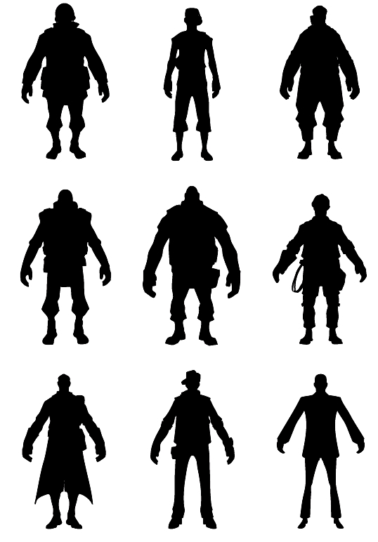
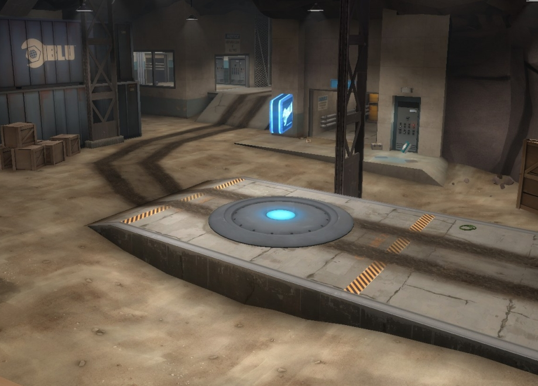

Silhouettes of the nine classes. Note the distinct character design that makes them still distinguishable.
Mechanics
Classes
There are nine playable classes in Team Fortress 2, which are categorized into three areas- "Offense", "Defense", and "Support", though these categorizations have no impact on gameplay. The abilities and stats of classes can change based on loadout.
- Scout: An offensive class with 133% move speed and 125 health points, specializing in hit-and-run combat and objective-capturing. Can double jump and capture control points (and push Payload carts) at a rate equivalent to 2 people. The Scout is armed with the Scattergun, a Pistol and a Bat by default.
- Soldier: An offensive class with 80% move speed and 200 health points, able to adapt to a variety of situations, making it great for both attack and defense. Can rocket jump to reach normally unreachable places. The Soldier is armed with the Rocket Launcher, a Shotgun and a Shovel by default.
- Pyro: An offensive class with 100% move speed and 175 health points, ideal for close quarters combat and group support. Can ignite enemies, use compression blast, and is not affected by afterburn from fire-based attacks. The Pyro is armed with the Flamethrower, a Shotgun and a Fire Axe by default.
- Demoman: A defensive class with 93.33% move speed and 175 health points, specializing in area denial and damage output. Can sticky jump. The Demoman is armed with the Grenade Launcher, a Stickybomb Launcher and a Bottle by default.
- Heavy: A defensive class with 76.67% move speed and 300 health points, excelling in dealing and receiving sustained damage. The Heavy is armed with the Minigun, a Shotgun and his own Fists by default.
- Engineer: A defensive class with 100% move speed and 125 health points that specializes in area denial and support. Can create, maintain, upgrade, move, and control buildings. The Engineer is armed with a Shotgun, a Pistol, a Wrench, and a PDA by default.
- Medic: A support class with 106.67% move speed and 150 health points that focuses on improving the longevity and efficiency of team mates. Regenerates health passively and is capable of healing teammates and deploying ÜberCharges on both teammates and himself. The Medic is armed with the Syringe Gun, a Medi Gun and a Bonesaw by default.
- Sniper: A support class with 100% move speed and 125 health points, ideal for long-distance target elimination. Can headshot. The Sniper is armed with the Sniper Rifle, a Submachine Gun and a Kukri by default.
- Spy: A support class with 100% move speed and 125 health points, ideal for covert disruption and assassination. Can disguise, sap, Cloak, headshot (With Ambassador only) and backstab. The Spy is armed with the Revolver, a Sapper, a butterfly knife, a Disguise Kit, and an Invisibility

A control point on cp_coldfront that is currently owned by team BLU
Objectives
Maps are made based on a variety of game modes, which are used to determine the objectives for both teams. Teams may compete
over the same goals (such as in Push Control Point and King of the Hill maps) or oppose each other in an offense vs. defense
setup (such as in Attack/Defend Control Point and standard Payload maps).
Many game modes use control points. Control points begin to be captured when a player of a team not owning the point stands on
the point. The capture time varies by map, and its speed is increased when more players stand on it (though each player beyond
the first provides diminishing returns). Capture is halted when an opposing team member stands on it in defense, and capture
progress is gradually undone when no capturing team mates stand on the point. Control points cannot be captured while "locked",
and locked points are usually unlocked after preceding points are captured. Payload carts are pushed and halted the same way
control points are captured, though instead of capturing a Payload cart, the pushing team tries to bring it to a checkpoint.
Übercharged players cannot capture points or push carts, though they can defend them.
In all official maps with offense vs. defense game modes, BLU plays offense while RED plays defense. In such maps, BLU tends to
have faster respawn times, but RED is given a setup time to prepare a robust defense.
Weapons
Each class has a unique set of weapons at their disposal occupying weapon slots 1, 2, and 3 (often referred to as primary, secondary,
and melee, respectively). Some classes may have additional slots, such as the Engineer's PDA and Spy's Disguise Kit. The choices
players make in choosing weapons and items constitutes their loadout.
Most non-melee weapons require Ammo for use. Weapons that use Ammo can be either reserve-based (having a limited clip size and requiring
reloading from stored ammo, such as the Pistol) or fully-loaded (capable of using all ammo without reloading, such as the Minigun).
Reserve-based weapons either use magazine-style reloading (reload fills loaded ammo in single, one-time animation, such as the Revolver)
or sequential reloading (reloads ammo from reserve one at a time, such as the Shotgun). Reloading can be interrupted at any time by
attacking or changing weapons, though time spent reloading (beyond the last carried ammo increment, in the case of sequential weapons)
is wasted. When reloading a sequential reload weapon, a different animation and reload time is used for reloading the first ammo and
subsequent ammo (for example, an emptied Grenade Launcher takes 1.24 seconds to reload 1 ammo, plus 0.6 seconds for each ammo after that).
Many weapons that don't use ammo must be recharged instead (such as Jarate). Recharging can usually be done by waiting for a set amount
of time, going to the resupply cabinet, or respawning. Some weapons without ammo require manual refill based on specific requirements,
such as the Medi Gun (which requires refill for ÜberCharge, though not for healing) and the Buff Banner.